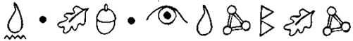
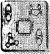

HOLLY Short yatağına uzanmış, sessizce burnundan soluyordu. Bunda şaşılacak bir şey yoktu. Leprechaunların genellikle sevimsiz kötü huylu oldukları bilinirdi. Ama Holly özellikle huysuzdu, hatta bir periye göre bile. Teknik olarak bir elf, genel anlamda ise bir periydi. Aynı zamanda bir leprechaundu ama bu onun yalnızca işiydi.
Belki de bu noktada bir tanımlama, perilerin soyagacıyla ilgili bir dersten daha yararlı olur. Holly Short’un fındık kabuğu renginde cildi, kırpık kumral saçları ve ela gözleri vardı. Burnu kanca gibi, dudakları ise dolgun ve etliydi, büyük-büyük babasının Eski Romanın aşk tanrısı Cupide olduğu göz önüne alınacak olursa, bu uygundu. Annesi, öfkeli bir mizaca sahip, fidan gibi bir Avrupalı elfli. Holly de ince yapılıydı, ince uzun parmakları, vızıltı değneğini sıkıca kavramak için birebirdi. Kulakları elbette ki sivriydi. Tam bir metrelik boyuyla Hollv. ortalama Deri boyunun yalnızca bir santim üzerindeydi ama boyunuz bu kadar kısa olunca, tek bir santim bile korkunç bir fark yaratabiliyordu.
Holly’nin endişesinin nedeni, Yarbay Root idi. Root daha ilk günden beri Holly’nin ensesindeydi. Yarbay, Recon tarihindeki ilk kadın subayın ekibine atanmasına içerlemişti. Recon, çok tehlikeli diye adı çıkmış, ölüm oranı yüksek bir karakoldu ve Root burasının küçük bir kıza uygun olmadığını düşünüyordu. Ama bu düşünceye alışması gerekiyordu, çünkü Holly Short’un ne o, ne de bir başkası yüzünden ekipten ayrılmaya niyeti yoktu.
Asla kabullenmese de Holly’nin kızgınlığının olası bir nedeni de Ayin idi. Aylardır bu Ayini yapmaya çalışıyordu ama nedense bunun için asla zaman bulamıyordu. Ye Root büyüsünün azaldığım fark edecek olursa, hiç kuşkusuz Trafik bölümüne tayin edilirdi.
Holly şiltesinden aşağı yuvarlanıp kendini duşa attı. Dünyanın merkezine yakın yaşamanın avantajlarından biri de buydu - su her zaman sıcaktı. Gün ışığı yoktu elbette ama bu da Yeraltı’nda rahatça yaşamanın ufak bir bedeliydi. Burası son insansız bölgeydi. Uzun bir iş gününün ardından, eve dönüp kalkanının düğmesini kapatarak, köpüklü yosun havuzuna girmek gibisi yoktu. Bu büyük bir mutluluk.
Holly giyindi, soluk yeşil tulumunun fermuarını çenesine kadar çekip miğferini taktı. Günümüz LEPrecon üniformaları oldukça şıktı. Birliklerinin, bir zamanlar giymek zorunda oldukları o garip giysiler gibi değillerdi. Tokalı ayakkabılar ve diz altından büzgülü bol pantolonları felaketti. Leprechaunlarm insanlara bu denli gülünç gelmesine şaşmamak gerekirdi. Aslında, böylesi daha iyiydi. Çamur Adamlar ‘leprechaun’ sözcüğünün, Yeraltı Polis biriminin seçkin bir kolunu simgeleyen LEPrecon’dan* geldiğini bilseler, büyük ihtimalle onların kökünü kazımak için harekete geçerlerdi. En iyisi göze çarpmamaya çalışıp insanların basmakalıp düşüncelerini değiştirmemekti.
(*) Lower Elements Poliçe ve Recon’un birleşmesi.
Ay çıkmıştı, sıkı bir kahvaltı edecek zaman yoktu. Holly buzdolabından ısırgan otu suyundan arta kalanı aldı ve tünellerde giderken içti. Ana geçitte, her zamanki gibi bir kargaşa yaşanıyordu. Uçan spritelar, tıpkı şişenin içindeki taşlar gibi, caddeyi hıncahınç doldurmuşlardı. Öbür yandan, hantal hantal yürüyen gnomelar koca popolarıyla iki şeridi tıkamışlardı. Küfürbaz karakurbağalar buldukları her nemli toprak parçasını istila etmiş, denizciler gibi durmadan sövüp sayıyorlardı. Bu, özel bir şaka gibi başlamış ama salgın bir hastalık gibi yayılmıştı. Biri onlara sihirli değneğini değdirmiş olmalıydı.
Holly kalabalığı yararak, karakola vardı. Kazma’nın Patates Marketinin önünde ayaklanma çıkmıştı bile. LEPrecon onbaşılarından Newt, ayaklanmayı bastırmaya çalışıyordu. Kolay gelsin, kâbus gibiydi. En azından Holly’nin yer yüzünde çalışmak gibi bir şansı vardı.
LEP polis karakolunun önü protestocularla kaynıyordu. Goblinlerle cüceler arasındaki bölge savaşı yeniden
alevlenmişti ve her sabah, bir sürü öfkeli anne baba, gelip masum evlatlarının serbest bırakılmasını istiyorlardı. Holly burnundan soludu. Masum bir goblin varsa eğer, Holly Short onunla tanışmak isterdi. Hepsi de tıkıldıkları hücrelerde, çete şarkıları uluyup birbirlerine ateş topları fırlatıyorlardı.
Holly kalabalığı omzuyla iterek ilerledi. “Dağılın,” diye homurdandı. “Bu polisin işi.”
Solucan leşinin üzerindeki sinekler gibi, çevresini sarmışlardı.
“Benim Grumpo’m masum!”
“Vahşi polisler!”
“Memur Hanım, bebeğimi battaniyesiyle birlikte içeri alabilir misiniz? Onsuz uyuyamaz da.”
Holly hiçbirini görmemek ve umursamamak için siperliğini indirdi. Bir zamanlar üniformanız, size saygı duyulmasını sağlardı. Artık öyle değildi. Artık bir hedeftiniz. “Affedersiniz Memur Hanım, sanırım siğil kavanozum kayboldu.” “Bakar mısınız, genç elf, kedim bir sarkıta tırmandı.” Ya da, “Yüzbaşım, bir dakikanız varsa, Gençlik Çeşmesine nasıl gidebileceğimi söyler misiniz?” Holly ürperdi. Şu turistler, diye düşündü. Yeteri kadar kendi sorunları vardı zaten. Hem de sandığından da fazla, birazdan öğrenecekti.
Polis merkezinin girişinde, kleptoman bir cüce rezervasyon kuyruğundakilerin, hatta kelepçelenmiş olduğu polis memurunun bile ceplerini boşaltmakla meşguldü. Holly vızıltı değneğiyle cücenin sırtına sertçe vurdu. Elektrik akımı cücenin deri pantolonunun arkasını hafifçe yaktı.
“Ne yapıyorsun bakayım, Mulch?”
Mulch irkildi, çaldıkları kollarından dökülüyordu.
“Memur Short,” diye sızlandı, pişmanlık dolu bir ifade takınarak, “kendime engel olamıyorum. Yaradılışımda var.”
“Bunun farkındayım, Mulch. Seni birkaç asır boyunca hücreye tıkmak da bizim yaradılışımızda var.”
Holly cüceyi tutuklayan polis memuruna göz kırptı.
“Her an tetikte olduğunu görmek güzel.”
Elf kızardı, cüzdanını ve rozetini yerden almak için çömeldi.
Holly Root’un ofisinin önünden hızla geçti, kumandanın gözüne ilişmeden, ofisine varabileceğini umdu...
"SHORT! BURAYA GEL!”
Holly iç geçirdi. Pekâlâ, işte yine başlıyoruz.
Miğferini kolunun altına alıp üniformasının kırışıklıklarını düzeltti ve Yarbay Root’un ofisine girdi.
Root’un yüzü öfkeden mosmor kesilmişti. Aslında bu, onun doğal hali sayılırdı, zaten bu yüzden kendisine ‘Pancar’ lakabı takılmıştı. Kalbinin patlamasına ne kadar kaldığı konusunda ortak bahisler oynanıyordu. En fazla yarım asır diyenler çoğunluktaydı.
Yarbay Root kolundaki ay saatine vuruyordu. “Pekâlâ?” diye sordu, “Saatin kaç olduğundan haberin var mı?”
Holly yüzünün kızardığını hissetti. Yaklaşık bir dakika geç kalmıştı. Bu nöbette çalışan, en az bir düzine polis memuru henüz işe gelmemişti. Ama Root ona eziyet etmekten zevk alıyordu.
“Geçit,” diye mırıldandı Holly, özür diler gibi. “Bu yöne doğru tam dört şerit vardı.”
“Bahanelerinle bana hakaret etme!” diye kükredi kumandan. “Şehir merkezinin nasıl olduğunu biliyorsun! Birkaç dakika erken uyan!”
Doğru, Haven’in nasıl olduğunu biliyordu. Holly Short şehirde doğup büyümüş bir elfti. İnsanlar madenlerle ilgili araştırmalar yapmaya başladıktan sonra, çok sayıda peri, yeryüzündeki kalelerinden kovulmuş ve Haven Şehri’nin derinliklerinde, güven içinde yaşamaya başlamışlardı. Anakent fazlasıyla kalabalık ve elverişsizdi. Şimdi de yayalara ayrılmış olan şehir merkezini araçlara açmak için kulis yapılıyordu. Hantal hantal çevrede dolaşan taşralı gnomeların, burayı kokuttukları yetmezmiş gibi.
Root haklıydı. Biraz daha erken kalkması gerekiyordu. Ama kalkmayacaktı. Diğer herkes buna zorunlu tutulana kadar.
“Ne düşündüğünü biliyorum,” dedi Root. “Neden her gün seninle uğraştığımı? Neden öbürlerini asla azarlamadığımı?”
Holly hiçbir şey söylemedi ama düşüncelerinin bunlar olduğu yüzünden okunuyordu.
“Nedenini söyleyeyim mi?”
Holly başını sallamayı göze aldı.
“Kız olduğun için.”
Holly parmaklarının yumruğa dönüştüğünü hissetti. Biliyordu!
“Ama aklındaki nedenden dolayı değil,” diye sürdürdü konuşmasını Root. “Sen,. Recon’daki tek kızsın. İlk. Sen bir deneksin. Bir kobay. Dışarıda, senin her hareketini izleyen bir milyon peri var. Senden çok ümitliler. Ama aynı zamanda, sana karşı önyargılı olanlar da var. Gelecekteki uygulama senin elinde. Ye şu an, bunun biraz usandırıcı olduğunu söylemeliyim.”
Holly gözlerini kırpıştırdı. Root şimdiye kadar böyle bir şey söylememişti. Genelde tek söylediği, “Miğferini düzelt”, “Dik dur”, ve saire ve saireydi.
“Elinden gelenin en iyisini yapmalısın, Short ve üstelik herkesten daha iyi olmalısın.” Root döner koltuğuna gömülürken iç geçirdi. “Bilemiyorum Holly. Özellikle bu Hamburg olayından sonra.”
Holly yüzünü buruşturdu. Hamburg olayı tam bir fiyaskoydu. Emrindekilerden biri yüzeye fırlamış ve Çamur Adamlardan sığınma hakkı istemişti. Root zamanı durdurup Düzeltme Ekibini yardıma çağırmak ve dört bellek silimi yapmak zorunda kalmıştı. Bir sürü polisin zamanı boşa harcanmıştı. Hepsi Holly’nin yüzündendi.
Yarbay masasında duran formlardan birini aldı. “Artık yararı yok. Ben kararımı verdim. Seni Trafik bölümüne gönderip bu göreve de Onbaşı Frond’u atıyorum. ”
“Frond!” diye patladı Holly. “O kız tam bir salak. Aklı bir karış havada. Onu denek olarak kullanamazsınız! ”
Root’un yüzü daha da koyu bir mora dönüştü.
“Yapabilirim ve yapacağım da. Neden yapmayacakmışım? Sen asla elinden geleni yapmadın... Ya, öyle ya da elinden gelen yeterli değil. Üzgünüm, Short, sana bir şans verilmişti...”
Yarbay yaptığı işe döndü. Toplantı bitmişti. Holly’nin tek yapabildiği orada öylece donakalmaktı. Her şeyi mahvetmişti. Şimdiye kadar elde ettiği en iyi kariyer şansını kaçırmıştı. Tek bir hata yüzünden geleceği, mazi olmuştu. Bu haksızlıktı. Holly, hiç alışkın olmadığı bir öfkenin içini kapladığını hissetti, ama sesini çıkarmadan sineye çekti. Soğukkanlılığını yitirmenin zamanı değildi.
“Yarbay Root, efendim. Bir şans daha hak ettiğime inanıyorum. ”
Root yaptığı işten başını bile kaldırmadı. “Nedenmiş o?”
Holly derin bir soluk aldı. “Sicilimden dolayı, efendim. Hamburg olayı dışında, yaptıklarım ortada. Tam on başarı. Ne tek bir bellek silimi, ne zaman durdurulması, şey dışında...”
“Hamburg olayı,” diye tamamladı Root.
Holly şansını denedi. “Erkek olsaydım — en sevdiğiniz spritelarınızdan biri - şu an bu konuşmayı bile yapmıyor olacaktık.”
Root sert bir bakış fırlattı. “Durun bir dakika, Yüzbaşı Short —”
Masasında çalan telefonlardan biri yüzünden, sözünü tamamlayamadı. Sonra ikincisi, ardından üçüncüsü. Root’un arkasındaki duvarda dev bir resim belirdi.
Root hoparlörün düğmesine basıp tüm arayanları konferans durumuna getirdi.
“Evet?”
“Bir kaçağımız var.”
Root başını salladı. “Scope’larla ilgili herhangi bir şey?”
Scope, Amerikan iletişim uydularına bağlı gizli takipçilerin kod adıydı.
“Evet,” dedi ikinci arayan. “Avrupa’dan güçlü bir sinyal. Güney İtalya’dan. Kalkansız.”
Root küfretti. Kalkansız bir peri insanlar tarafından görülebilirdi. Peri, insansıysa eğer, bu o kadar büyük bir sorun sayılmazdı.
“Sınıflandırma?”
“Kötü haber, Yarbay,” dedi üçüncü arayan. “Başıboş bir trollümüz var.”
Root gözlerini ovuşturdu. Neden bu tür olaylar, hep onun nöbetinde olurdu? Holly Root’un hayal kırıklığını fark etmişti. Troller, derin-tüneldeki en aşağılık yaratıklardı. Labirentin içinde dolaşıp karşılarına çıkacak kadar şanssız olanları avlarlardı. Küçük beyinlerinde, kurallara ya da sınırlamalara yer yoktu. Ara sıra, içlerinden biri kendini bir basınç asansörünün boşluğunda bulurdu. Çoğunlukla, yoğun hava akımı onları kızartırdı ama bazen içlerinden biri kurtulur ve yeryüzüne fırlatılırdı. Acıdan ve azıcık ışıktan çıldırmış halde, genellikle karşılarına ne çıkarsa yok etmeye başlarlardı.
Root kendine gelmek için, hızla başını salladı.
“Pekâlâ, Yüzbaşı Short. Sanırım istediğin şansı yakaladın. Formundasın değil mi, anladığım kadarıyla?” “Evet, efendim,” diye yalan söyledi Holly, Ayin’i savsakladığım öğrenirse, Root’un onu hemen görevinden uzaklaştıracağını biliyordu.
“İyi. Öyleyse çıkarken yanma bir silah alıp hedef bölgeye git.”
Holly ekrana baktı. Scope’lar surlarla çevrili bir İtalya kentinin görüntülerini yansıtıyordu. Kırmızı bir nokta, kırlardan insan nüfusunun yoğunlukta olduğu yerlere doğru hızla ilerliyordu.
“Esaslı bir keşif yap ve bir rapor hazırla. Bulup getirmeye kalkışma. Anlaşıldı mı?”
“Evet efendim.”
“Son üç ay içinde, troll saldırılarında altı adamımızı kaybettik. Tam altı adamımızı. Üstelik bu, yeraltında oldu, alışkın olduğumuz bölgede.”
“Anlıyorum, efendim.”
Root kuşku içinde dudaklarını büzdü.
“Anlıyorsun değil mi, Short? Gerçekten anlıyorsun depil mi?”
"Sanırım öyle, efendim.”
“Bir Trollün etle kemiğe neler yapabileceğini gördün mü hiç?”
“Hayır, efendim. Yakından değil.”
“Pekâlâ. Bugün ilk kez olmasa iyi olur.”
“Anlaşıldı.”
Root Holly’ye ters ters baktı. “Nedenini bilmiyorum, Yüzbaşı Short ama ne zaman benimle hemfikir olmaya başlarsan, kesinlikle endişeleniyorum.”
Root endişelenmekte haklıydı. Zaten bu Recon harekatının nasıl sonuçlanacağını, ta en başından bilse, kuşkusuz hemen oracıkta istifa ederdi. Bu gece tarih yazılacaktı. Ve üstelik bu, radyumun keşfi ya da aya ayak basan ilk adam türünde mutlu bir tarih değildi. Bu, İspanyol Engizisyonu ya da işte Hinderburg türünde kötü tarihti. Hem insanlar, hem periler için kötüydü. Herkes için kötüydü.
Holly doğrudan çavlanlara yöneldi. Genellikle konuşmaktan kapanmayan dudakları, kararlılık dolu sert bir çizgi halini almıştı. Tek bir şans, işte bu kadar. Hiçbir şeyin dikkatini dağıtmasına izin vermemeliydi.
Tatil vizelerini almak için ümitle bekleyenlerin oluşturduğu o bildik kuyruk, Asansör Plaza’nın köşesine kadar uzanıyordu ama Holly sıradakilere rozetini göstererek, kuyruğa girmeden ilerledi. Kavgacı bir gnome, ona sırasını vermek istemiyordu.
“Nasıl oluyor da siz LEPtekiler en öne geçebiliyorsunuz? Ne özelliğiniz var sizin?”
Holly burnundan derin bir soluk aldı. Nezaketi elden bırakmamalıydı. “Görev gereği, efendim. Şimdi izin verirseniz.”
Gnome koca poposunu kaşıdı. “Siz LEPtekilerin, bu polis görevlerini, ay ışığında dolaşmak için uydurduğunuzu duydum. Kulağıma gelen bu.”
Holly neşeyle gülümsemeye çalıştı. Ama dudaklarının ifadesi, tıpkı limon yemiş de büzüşmüş gibiydi.
“Bunu size her kim söylediyse, tam bir salaktır... efendim. Recon kesinlikle gerekli olmadıkça yeryüzüne çıkmaz.”
Gnome kaşlarını çattı. Bu söylentiyi kendisinin uydurduğu açıkça belliydi ve Holly’nin kendisine salak dediğinden kuşkulanıyordu. Gnome bunu anlayıncaya kadar, Holly iki kanatlı kapıdan süzülmüştü bile.
Foaly onu Ops’ta bekliyordu. Foaly taşıma ve gizli izleme ağının, insanların istihbarat büroları tarafından gözlemlendiğine inanan paranoyak, bir sentordu. Başkalarının aklından geçenleri okumalarına engel olmak için, sürekli olarak alüminyum folyodan bir şapka takardı.
Holly iki kanatlı havalı kapıdan içeri girdiğinde, Foaly ona sert bir bakış fırlattı.
“Buraya girdiğini gören oldu mu?”
Holly iyice düşündü.
“FBI, CIA, NSA, DE A, MI6. Ha bir de BİH.”
Foaly kaşlarım çattı. “BÎH mi?”
“Binanın içindeki herkes,” diye sırıttı Holly.
Foaly döner koltuğundan kalkıp Holly’ye doğru tırıs gitti.
“Oh, çok komiksin Short. Bir alemsin. Hamburg olayının, ukalalığını biraz olsun azaltacağını düşünmüştüm. Yerinde olsam, bütün dikkatimi işime verirdim.”
Holly kendini toparladı. Foaly haklıydı.
“Pekâlâ, Foaly. Bana durumu açıkla.”
Foaly Eurosat’tan yayınlanan, büyük plazma ekrandaki canlı yayma döndü.
“Kırmızı nokta, trollün kendisi. Brindisi yakınlarında, surlarla çevrili bir şehir olan Martina Franca’ya doğru ilerliyor. Saptayabildiğimiz kadarıyla, E7 hava menfezine düşmüş. Bir yüzey atışı sonrasında, soğuma evresinde olduğu için, troll şu an ızgara ete dönüşmüş durumda değil.”
Holly yüzünü buruşturdu. Çok sevimli, diye düşündü.
“Hedefimiz yol boyunca yiyecek bulduğu için şanslı sayılırız. Bir-iki saat içinde birkaç ineği mideye indirdi, bu da bize biraz zaman kazandırdı.”
“Birkaç inek mi?” diye çığlık attı, Holly. “Bu adamın, boyu ne kadar ki?”
Foaly alüminyum folyo şapkasını düzeltti. “Boğa trollü. Gelişimini tamamlamış. Yüz seksen kilo ağırlığında, azı dişleri bir yabandomuzu gibi. Gerçek bir yabandomuzu.”
Holly yutkundu. Birdenbire Recon Düzeltmeden çok daha cazip görünmüştü gözüne.
“Pekâlâ. Bana verecek bir şeyin var mı?”
Foaly hızla donatım masasına uzandı. Oradan, dikdörtgen bir kol saatine benzer bir nesne seçti.
“Yer saptayıcı. Sen onu bulunca, biz de seni buluruz. Her zamanki gibi.”
“Video?”
Foaly Holly’nin miğferinde yardımcı yive, küçük bir silindir yerleştirdi.
“Canlı yayın. Nükleer pil. Zaman sınırlaması yok. Mikrofon, sese duyarlı.”
“Güzel,” dedi Holly. “Root yanıma bir silah almamı söyledi. Her ihtimale karşı.”
“işte şurada,” dedi Foaly. Silah kümesinin içinden platin bir tabanca seçti. “Neutrino 2000. En son model. Bunlardan, tünel çetelerinde bile yok. Üç ayarlı hem de. Yanmış, iyi pişmiş ve kül olmuş. Nükleer güç kaynağı da var, bu yüzden istediğin kadar ateş et. Bu bebek, senden bin yıl daha uzun yaşayacaktır.”
Holly, hafif silahı, omzundaki kılıfa yerleştirdi. “Hazırım... sanırım.”
Foaly kıkırdadı. “Pek sanmam. Hiç kimse bir troll için hazır sayılmaz, asla.”
“Bana güvendiğin için sağol, destekçi.”
“Güvenmek, cahilliktir,” dedi Foaly. “Kendinden çok eminsen, bilmediğin bir şey var demektir.”
Holly karşı çıkmayı düşündü, ama vazgeçti. Belki de için için Foaly’nin haklı olduğunu düşünüyordu.
Basınçlı asansörler dünyanın merkezinden çıkan gazlı sütunlardan güç alıyordu. Foaly’nin önderliğindeki LEP teknisyenleri, akıntıların içinde ilerleyebilen titanyum yumurtalar tasarlamışlardı. Yumurtaların kendi motorları vardı, oysa yüzeye hızlı bir yolculuk yapmak için, deprem dalgasından daha iyi bir yol olamazdı.
Foaly, Holly’yi E7’ye inen uzun çavlan dizisinden geçirdi. Bir kıskacın içinde duran-yumurta, magma dalgalarına fırlatılamayacak kadar kırılgan görünüyordu. Altı kömür karası renginde ve şarapnel delikleriyle doluydu.
Foaly çamurluklarından birini sevgiyle okşadı. “Bu bebek tam elli yıldır hizmet veriyor. Çavlanlarda kullanılan en eski model.”
Holly yutkundu. Bırakın bu antikayı sürmeyi, çavlanlar bile onu yeterince heyecanlandırıyordu.
“Ne zaman kullanımdan kaldırılacak?”
Foaly tüylü göbeğini kaşıdı. “Bu parasızlıkta, ancak ölümcül bir kaza olunca.”
Holly ağır kapıyı kolundan tutup açtı, çerçevesindeki lastikten bir tıslama duyuldu. Yumurta konfor amaçlı tasarlanmamıştı. Elektronik aletler yığını arasında, yolcu koltuğuna zar zor yer vardı.
“Bu da ne?” diye sordu Holly, koltuk başlığındaki grimsi lekeyi işaret ederek.
Foaly huzursuzca ayaklarını sürüdü.
“Şey... beyin sıvısı, sanırım. Bir önceki özel görev sırasında bir basınç sızıntısı yaşadık. Ama sorun halloldu. Ve polis memuru kurtuldu. Zekâ düzeyinde birkaç puanlık bir düşüş oldu ama yaşıyor ve sıvı gıdalarla beslenebiliyor.”
“Öyleyse sorun yok,” diye dalga geçti Holly, kabloların arasından dikkatlice geçerek.
Foaly kilitleri iyice kontrol edip Holly’nin emniyet kemerlerini bağladı.
“Her şey tamam mı?”
Holly başıyla onayladı.
Foaly miğferin mikrofonunu tıklattı. “Bizi habersiz bırakma,” dedi arkasından kapıyı çekerek.
Düşünmemeye çalış, dedi Holly, kendi kendine. Az sonra bu küçücük mekiği yutacak olan sıcak, beyaz magma akışını düşünme. İçini dışına çıkaracak olan sesin iki misli hızla, yüzeye doğru fırlatılacağını düşünme. Ve uzun azı dişleriyle bağırsaklarını sökmeye hazır, kana susamış trollü kesinlikle düşünme. Hayır. Bunların hiçbirini düşünme... Artık çok geç.
Kulaklığında, Foaly’nin sesi yükseldi. “T-eksi yirmi,” dedi. “Çamur Adamların yeraltı gözlemlerine başlamış olmaları halinde, güvenli bir kanaldayız. Hiç belli olmaz. Bir keresinde, Orta Doğu’dan gelen bir petrol tankeri yayınımıza girmişti. Ne rezaletti.”
Holly miğfer mikrofonunu ayarladı.
“Dikkatini topla, Foaly. Yaşamım senin ellerinde.” “Oh... tamam, üzgünüm. Seni E7’nin ana boşluğuna atmak için rayları kullanacağız, her an bir dalgalanma bekleniyor. Bu, ilk yüz kilometreyi geçmeni sağlayacak, sonra tek başınasın.”
Holly parmaklarını çifte kumanda koluna kenetledi ve başını salladı.
“Tüm sistemler kontrol edildi. Motoru çalıştır.” Yumurtanın motoru ateşlenince bir hışırtı duyuldu. Küçük mekik Holly’yi bir boncuk gibi titreterek yuvasından fırladı. Artık Foaly’nin sesini güçlükle duyabiliyordu.
“Şu an ikinci hava boşluğundasın. Uçmaya hazırlan, Short.”
Holly kontrol panelinden lastik bir silindir alıp dişlerinin arasına sıkıştırdı. Dilini yutarsan, telsizin işe yaramazdı. Dış kameraları çalıştırıp görüntüyü ekrana yansıttı.
E7’nin girişi yavaşça üzerine doğru geliyordu. Hava iniş ışığının altında kor gibi parlıyordu. Yan boşluktan beyaz, sıcak kıvılcımlar çıkıyordu. Holly gümbürtüyü duyamıyor, ancak hayalinde canlandırabiliyordu. Bu milyonlarca troll uluyormuş gibi tüyler ürpertici bir rüzgârdı.
Parmaklarını kumandalara sıkıca kenetledi. Mekik ‘girişin önünde titreyerek durdu. Çavlan aşağı ve yukarı doğru uzanıyordu. Kocaman, sınırsız, bir karıncanın, atık su borusuna atılması gibiydi.
“Pekâlâ,” diye çatırdadı Foaly. “Kahvaltını midende tutmaya çalış. Bunun dönme dolaba benzer bir yanı yok.”
Holly başıyla onayladı. Ağzında bu lastik parçası varken konuşamıyordu. Nasılsa Foaly onu kameradan izleyebiliyordu.
“Sayonora, tatlım,” dedi Foaly ve düğmeye bastı.
Mekiğin kıskacı açıldı ve Holly’yi dipsiz bir kuyuya attı. Yerçekimi artıp onu dünyanın merkezine doğru sürüklemeye başlayınca, midesi iyice gerildi. Deprem departmanının buralarda yaptığı sondajlarda magma alevlerini saptamak konusunda yüzde 99.8’lik bir başarı sağlanmıştı. Ama yüzde ikilik oran, göz ardı edilemezdi.
Düşüş ona hiç bitmeyecekmiş gibi geldi. Ve Holly, kendini tam bu hurda yığınına teslim etmişken, onu hissetti. O unutulmaz titreşimi. Sanki bu küçük kürenin dışında, tüm dünya yerlebir olmuştu. İşte geliyordu.
“Yüzgeçler,” dedi silindirin çevresinden sözcüğü tükürürmüşçesine.
Foaly yanıt vermiş olabilirdi, Holly artık onu duyamıyordu. Kendi sesini bile duyamıyordu ama dışarıdaki monitörden, denge yüzgeçlerinin dışarı açıldığını görmüştü.
Alev onu bir kasırga gibi savurup yüzgeçler açılana kadar mekiği bir topaç gibi döndürdü. Geminin altına doğru, bardaktan boşanırcasına yağan yarı-erimiş taşlar, onu çavlanın duvarlarına sürüklüyordu. Holly kumandaları ateşleyerek karşılık veriyordu.
Mekiğin içinde korkunç bir sıcak vardı, bir insanı kızartmaya yetecek kadar. Ama perilerin akciğerleri daha sağlamdı. İvme görünmez ellermiş gibi bedenini tarayıp kollarının ve yüzünün derisini gerdi. Holly gözlerine dolan tuzlu teri kırpıştırdı ve monitöre odaklandı. Dalga mekiği tümüyle içine almıştı, üstelik kocamandı. En az yedi şiddetindeydi. En az 500 metre çapuldaydı. Turuncu çizgili magma çevresinde bir girdap gibi dönerek tısladı, sanki metal kaplamanın dayanıksız bir noktasını arar gibiydi.
Mekik şikayet edercesine inledi, elli yıllık perçin patlamak üzereydi. Holly başım sağa sola salladı. Döner dönmez ilk iş, Foaly’nin o tüylü kıçını tekmeleyecekti. Kendini bir gnomeun azı dişleri arasında duran, kabuğun içindeki bir fındık gibi hissetti. Ölüme mahkumdu.
Kavisli kaporta sanki dev bir el tarafından yumruklanıyormuş gibi, yer yer kabardı. Basınç ışığı yanıp söndü. Holly başının sıkıştığını hissedebiliyordu. Önce gözleri gidecekti — olgun meyveler gibi fırlayacaklardı.
Kadranları gözden geçirdi. Alevden kurtulmasına yirmi saniye kalmıştı, sıcak hava akımlarına doğru hızla ilerliyordu. Yirmi saniye ona bir asır gibi geldi. En son kaya yağmurundan geçerken, Holly gözlerini korumak için miğferini indirdi.
Ye birdenbire her yer aydınlanmıştı, öncekine oranla hafif sayılabilecek sıcak hava akımlarının içinde yükseliyorlardı. Holly yükselmek için kendi itiş gücünden de yararlandı. Rüzgârda yalpalayarak kaybedecek zamanı yoktu.
Tepesindeki, neon ışıklarından oluşan halka, iskeleyi işaret ediyordu. Holly yatay bir dönüş yapıp ışıkları iskelenin boğumlarına tuttu. Bu ince bir işti. Çok sayıda Recon pilotu buraya kadar gelip limanı kaçırmışlar ve değerli zamanlarını boş yere harcamışlardı. Ama Holly kaçırmamıştı. O doğuştan yetenekliydi. Akademi birincisiydi.
Roketleri son bir kez daha zorlayıp kalan birkaç yüz metreyi tırmandı. Holly ayaklarının altındaki dümenleri kullanarak, mekiği ışık çemberine ve iskeledeki kelepçelere yönlendirdi. Düğümler kendi eksenleri çevresinde dönüp yuvalarına girdi, güven içinde.
Holly göğsüne vurup emniyet kemerini çözdü. Kapı açılır açılmaz, kabinin içini yüzeyin o tatlı havası doldurmuştu. Çavlanlarda yolculuk ettikten sonra, alman ilk soluk gibisi yoktu. Holly mekiğin bayat havasından arınmak için derin derin soludu. Nasıl olmuştu da Peri Halkı yeryüzünü terk edebilmişti? Bazen atalarının orada kalıp Çamur Adamlarla savaşmış olmalarını dilerdi, ama onların sayıları çok fazlaydı. Ancak yirmi yılda bir çocuk sahibi olabilen perilerin aksine, Çamur Adamlar kemirgenler gibi ürüyorlardı. Çokluk, büyünün bile etkisini azaltabilirdi.
Akşamın keyfini çıkarmasına karşın, Holly havadaki kirletici madde izlerinin tadını alabiliyordu. Çamur Adamlar karşılarına çıkan her şeyi yok ediyorlardı. Tabii ki artık çamurun içinde yaşamıyorlardı. En azından bu ülkede değil. Yo, hayır. Her şey için ayrı birer odası olan büyük, süslü konutlarda yaşıyorlardı — yatmak için odalar, yemek için odalar, hatta tuvalete gitmek için bile bir oda! Hem de evin içinde! Holly ürperdi. Kendi evinizde tuvalete gitmeyi düşünsenize. İğrenç! Tuvalete gitmenin tek iyi yanı, minerallerin toprağa geri verilmesiydi, oysa Çamur Adamlar... şeylerini... mavi renkte kimyasal maddelerle zararsız hale getirip bunu da mahvetmişlerdi. Bundan yüz yıl önce biri ona, insanların, gübrenin içindeki verimi yok edeceğini söylese, kafataslarına birkaç hava deliği açmalarını önerirdi.
Holly bir çift kanadı çengelden çıkardı. Bunlar çifte ovaldi ve boğuk sesli bir motorları vardı. Holly inledi. Büyük kızböcekleri. Bu modelden nefret ediyordu. Üstelik, benzin motorluydular. Ve çamura saplanmış bir domuzdan bile ağırdılar. Oysa bir de Sinekkuşu Z7’lere bak, yolculuk dediğin buydu işte. Bir fısıltı kadar sessizdiler ve sizi dünyanın çevresinde iki kez uçurabilecek güçte, güneş enerjisiyle çalışan uydu bağlantılı bir pile sahiptiler. Ama yine bütçe kısıntısı yapılıyordu.
Holly’nin kolundaki yer saptayıcı ötmeye başladı. Menzilin içindeydi, çıkıp iskeleye adım attı. Holly peri hisarı diye bilinen, gizli bir toprak höyüğün içindeydi. İşin aslı, Peri Halkı toprağın derinlerine sürülünceye kadar bunların içinde yaşıyordu. İçlerinde pek fazla teknolojik imkan yoktu. Birkaç dış gözlem sistemi ve girişin fark edilmesi halinde, kendi kendilerini yok etmelerini sağlayacak bir aygıt.
Ekranlarda hiçbir şey görünmüyordu. Her şey yolundaydı. Trollün çarptığı havalı kapılar biraz eğrilmişti ama geriye kalan her şey kullanılabilir durumda görünüyordu. Holly kanatlarını takıp dış dünyaya adım attı.
İtalya’nın gökyüzü gece karanlığında kuru ve soğuktu. Sanki zeytin ve şarapla aşılanmış gibiydi. Kaba biçilmiş çimenlerin üzerinde cırcırböcekleri ötüyor, yıldızların ışığında pervaneler uçuşuyordu. Holly kendine engel olamayıp gülümsedi. Tehlikeyi göze almaya değerdi, hem de her saniyesini.
Tehlikeden söz etmişken... yer saptayıcısını kontrol etti. Artık çok daha yüksek sesle ötüyordu. Troll neredeyse şehrin surlarındaydı! Görevi tamamlandıktan sonra, doğanın tadını çıkarabilirdi. Şimdi harekete geçme zamanıydı.
Holly omzundaki marş ipini çekip kanatların motorunu çalıştırdı. Ses yoktu. Holly sessizce burnundan soludu. Sığmaktaki her şımarık çocuğun bile, kır tatillerinde kullanmak için birer Sinekkuşu vardı; LEP’in ise, yeni olmasına rağmen bir işe yaramayan kanatları. Holly ipi bir daha çekti, sonra bir kez daha. Üçüncüsünde motor, gece karanlığının içinde dumanlar ve pis kokulu gazlar saçarak çalıştı. “Hele şükür,” diye homurdandı Holly cikleyi sonuna kadar açarak. Kanatlar düzenli çırpana kadar titreştiler ve hiç çaba harcamadan Yüzbaşı Holly Short’u karanlık gökyüzüne uçurdular.
Troll yer saptayıcısı olmadan da rahatlıkla izlenebilirdi. Ardında, kazma makinesinin açtığı tünellerden de geniş bir iz bırakmıştı. Holly hafif pusun içinde, ağaçların arasından alçaktan uçarak, trollün geçtiği yolu izledi. Bu çılgın yaratık, bir üzüm bağının ortasını biçerek geçmiş, taştan bir duvarı yerlebir etmiş ve bir bekçi köpeğini çitin altında, sersemlemiş durumda bırakmıştı. Sonra Holly ineklerin üzerinden uçtu. Pek hoş bir manzara sayılmazdı. Fazla ayrıntıya girmeden, ineklerden geriye, boynuz ve toynaklarından başka bir şey kalmadığını söyleyelim.
Kırmızı uyarı sinyali artık daha yüksek sesle ötüyordu. Daha yüksek sinyal, daha yakın demekti. Holly hemen altında, alçak bir tepe üzerine kurulu, Orta Çağdan kalma, kale surlarıyla çevrili kenti görebiliyordu. Çoğu pencereden hâlâ ışık geliyordu. Birazcık sihir zamanıydı.
Peri Halkının büyük büyü gücü olduğu, yalnızca boş bir inançtır. Öte yandan bazı güçleri olduğu da bir gerçektir. İyileştirme, hipnotizma ve görünmezlik bunlardan bazılarıdır. Aslında görünmezlik demek yanlış olur. İşin aslı periler öylesine hızlı hareket ederler ki belli bir yerde gözle görülecek kadar uzun süre kalmazlar. İnsanlar çok dikkatlice bakacak olurlarsa — pek bakmazlar ya, neyse - havada hafif titrek bir ışık fark ederler. Ama onu da genellikle, buharlaşmaya yorarlar. İşte tam Çamur Adamlara göre bir şey; basit bir olaya, karmaşık bir açıklama getirmek.
Holly kalkanını açtı. Bu normalden biraz daha uzun sürdü. Alnındaki ter damlalarının izini hissedebiliyordu. Bu Ayini bir an önce yapmam gerek, diye düşündü. En kısa zamanda.
Aşağıdan gelen bir takım gürültüler, düşüncelerini böldü. Bunlar gece duyulan türde gürültülere pek benzemiyordu. Holly sırt çantasının düzeltip daha yakından bakmak için sese doğru uçtu. Yalnızca bakılacak, diye anımsattı kendine, görevi buydu. Çavlanları aşan Recon subayı hedefin yerini belirlemek için gönderilirdi, oysa onu geri getirecek olanlar, konforlu servis araçlarıyla geliyorlardı.
Troll, Holly’nin hemen altında, parmaklarının gücüyle bir toprak yığınına dönüşen, kentin dış duvarlarını yumrukluyordu. Holly soluğu kesilerek irkildi. Bu bir canavardı! Bir fil kadar büyük ve on katı kadar da tehlikeliydi. Ama özellikle bu yaratık tehlikeden de beterdi, çünkü korkmuştu.
“Kumanda merkezi," dedi Holly, mikrofona doğru. “Kaçağın yeri belirlendi. Son derece tehlikeli durum var.
Hattın öbür ucunda Root’un kendisi vardı.
“Açıklayın, Yüzbaşı.”
Holly video hattını, trolle doğru tuttu.
“Kaçak, şehir surlarını aşıyor. Her an burada olabilir. Düzeltme Timi ne kadar uzakta?”
“En fazla beş dakikalık uzaklıkta. Hâlâ aracın içindeyiz.”
Holly dudağını ısırdı. Root araçta mıydı?
“Bu çok uzun bir süre, Yarbay. On saniye içinde bütün şehir havaya uçacak... Ben giriyorum.”
“Olumsuz, Holly... Yüzbaşı Short. Buna izniniz yok. Yasaları biliyorsunuz. Olduğunuz yerde kaim.”
“Ama, Yarbay –“
Root sözünü kesti. “Hayır! Ama sözcüğünü duymak istemiyorum Yüzbaşı. Kıpırdamayın. Bu bir emirdir!” Holly’nin tüm bedeni, sanki bir kalp atışı gibi sarsılıyordu. Benzin kokuları onu serseme çevirmişti. Ne yapabilirdi? Alınacak en doğru karar neydi? Yaşamlar mı, emirler mi?
Ardından troll duvarı parçaladı ve bir çocuğun sesi, gecenin sessizliğini yardı.
“Aiuto!” diye bağırdı çocuk.
İmdat. Bir davet. Durmaksızın.
“Üzgünüm, Yarbay. Troll delirmiş gibi ve burada çocuklar var.”
Holly Root’un mikrofona doğru tükürürken öfkeden mosmor kesilmiş yüzünü hayal edebiliyordu.
“Rütbeni geri alacağım, Short! Bundan sonraki yüz yılını lağım temizleyerek geçireceksin!”
Ama bu işe yaramıyordu. Holly mikrofonunun bağlantısını kesip trollün peşinden gitmişti.
Yüzbaşı Short bedenine yeni bir biçim vererek delikten içeri daldı. Gözüktüğü kadarıyla bir restorandaydı. Hem de kalabalık bir restorandaydı. Troll elektrik lambasının ışığından geçici olarak körleşmiş halde, odanın ortasında etrafı parçalıyordu.
Müşteriler şaşkındı. Çocuğun yalvarışı bile yavaş yavaş susmuştu. Başlarında gülünç parti şapkalarıyla, ağızları açık, hayretler içinde oturuyorlardı. Garsonlar donakalmıştı, açık ellerinin arasında, kocaman makarna tepsileri tutuyorlardı. Tombul Italyan çocukları, tombul parmaklarıyla gözlerini kapamışlar. Başta hep böyle olurdu: Şok sessizliği. Sonra sıra çığlık gelirdi-.
Bir şarap şişesi yere düşüp kırıldı. Bu büyüyü bozdu. Kargaşa başladı. Holly yüzünü buruşturdu. Troller gürültüden de en az ışıktan olduğu kadar nefret ederlerdi.
Troll kaba tüylü omuzlarını kaldırdı, pençelerini, kötülük habercisi bir ciiiiiik sesiyle dışarı çıkarttı. Bu tam yırtıcı hayvanlara yaraşır bir davranıştı. Yaratık saldırmak üzereydi.
Holly silahını çekip hızlı bir hareketle, ikinci konuma getirdi, insanları kurtarmak için Trollü kesinlikle öldüremezdi. Düzeltme Timi gelinceye kadar onu bayıl tabilirdi.
Holly trollün kafatasının altındaki zayıf noktaya nişan alıp ona yoğun iyon ışını gönderdi. Yaratık sendeledi, birkaç adım tökezledi, sonra çok öfkelendi.
Sorun yok, diye düşündü Holly, kalkanım var. Görünmezim. Olayı izleyenler, titrek mavi ışının, havadan geldiğini sanacaklardı.
Troll Holly’ye doğru yuvarlandı, çamur içindeki uzun tüyleri mum gibi sallanıyorlardı.
Panik yok. Beni göremez.
Troll masalardan birini havaya kaldırdı.
Görünmezim. Tamamen görünmezim.
Tüylü kolunu geriye çekip masayı savurdu.
Havada titrek bir ışık parıldadı.
Masa doğruca Holly’nin başına geliyordu.
Holly bir saniye gecikmeyle kımıldadı. Masa sırt çantasına takıldı ve benzin deposu havalandı. Yere düşerken de içindeki yanıcı sıvı etrafa saçıldı.
İtalyan restoranları - herkesin bildiği gibi — mumlarla doludur. Benzin deposu havada hızla dönüp özenle tasarlanmış bir şamdanın tam üstüne düştü. Depo öldürücü bir havai fişek gibi, birden alev aldı. Benzinin çoğu trollün üzerine indi. Tıpkı Holly gibi.
Troll onu görebiliyordu. Hiç kuşku yoktu. Nefret ettiği ışığın içinden, gözlerini kısarak Holly’ye baktı, alnı acı ve korkudan kasılmıştı. Holly’nin kalkanı yoktu. Sihri kaybolmuştu.
Holly trollün bileğini sıkıca kavradı ama bu işe yaramadı. Yaratığın parmaklarının her biri bir muz büyüklüğündeydi ama kesinlikle muz kadar esnek değildi. Vahşi bir rahatlıkla Holly’nin göğsünü ezip soluğunu kesiyorlardı. İğneye benzer tırnakları, Holly’nin dayanıklı kumaştan yapılmış üniformasını tırmalıyordu. Her an kumaşı delebilirdi ve işte o zaman işi biterdi.
Holly düşünemiyordu. Restoran bir panayıra dönmüştü. Troll dişlerini gıcırdatıyordu; miğferini kavramaya çalışan yağlı azıdişlerini. Holly filtrelerinin arasından trollün pis kokulu nefesini duyabiliyordu. Alevler trollün sırtına yayıldıkça, çıkan yanık kürk kokusunu da alabiliyordu.
Hayvanın yeşil renkli dili, Holly’nin siperliğini törpüleyerek, alt bölümünü inceltti. Siperlik! İşte buydu, tek şansı. Holly boşta duran elini, kurnazca miğfer düğmelerine götürdü. Tünel ışıklan. Yüksek ışınlar.
İçeri göçmüş düğmeye bastırdı ve gözlerinin üzerindeki ikili spotlardan 800 vatlık, filtresiz bir ışık yayıldı.
Troll şahlanarak geriledi, dişlerinin arasından, keskin bir çığlık yükseldi. Durdukları yerde, düzinelerce şişeyle bardak tuzla buz oldu. Tüm bunlar zavallı hayvan için çok fazlaydı. Sersemlemiş, yanmış ve şimdi de kör olmuştu. Şok ve acı, küçücük beynine kadar ulaşıp kapanmasını emretmişti. Troll boyun eğdi ve komik sayılabilecek bir katılıkla birden devrilip düştü. Holly trollün azıdişi tarafından tırpanlanmamak için yuvarlandı.
Çıngırdayan cam parçalan, çatırdayan kürk ve birden verilen soluklar dışında çıt çıkmıyordu. Holly titreyerek ayağa kalktı. Onu izleyen çok' sayıda göz vardı - insan gözleri. Tamamiyle görülebiliyordu. Ve bu insanlar uzun süre kayıtsız kalmayacaklardı. Bu cinsler asla kayıtsız kalmazlardı. Yapacağı tek şey politik olmaktı.
Holly boş avuçlarını havaya kaldırdı. Barış işareti.
“Scusatemi tutti,”* dedi dilini rahatlıkla döndürerek.
(*) Herkesten özür dilerim.
Her zaman için nazik olan İtalyanlar, önemli olmadığını mırıldandılar.
Holly elini yavaşça cebine götürüp içinden küçük bir küre çıkarttı. Küreyi yerin ortasına bıraktı.
“Guardate,” dedi. Bakın.
Restorandaki müşteriler onun sözünü dinleyip küçük gümüş topu görmek için eğildiler. Toptan yükselen tik tak sesleri gittikçe hızlanıyordu, sanki bir geri sayım yapılıyordu. Holly küreye arkasını döndü. Üç, iki, bir...
Bum! Pat! Bu kitlesel baygınlık öldürücü bir şey değil, yalnızca kırk dakika içinde başlayacak toplu bir baş ağrısıydı. Holly iç geçirdi. Güvendeydi. Şimdilik. Kapıya doğru koştu ve sürgüyü çekti. Hiç kimse ne içeri girebilir, ne de dışarı çıkabilirdi. Duvardaki büyük deliğin dışında. Sonra Holly, restorandaki yangın söndürücüsünü, için için yanan trollün üzerine tuttu, bir yandan da buz gibi köpüğün, bu uyuyan koca hayvanı canlandırmamasını diledi.
Holly yarattığı karmaşaya şöyle bir baktı. Tam anlamıyla bir keşmekeşti. Hamburg’dan da beter. Root, canlı canlı derisini yüzecekti. Trolle yüz yüze gelmeyi bile buna yeğlerdi. Bu hiç kuşkusuz kariyerinin sonu demekti ama birdenbire tüm bunlar önemini yitirmişti çünkü kaburgaları ağrıyordu, başı zonklamaya başlamıştı. Belki de Düzeltme Timi gelinceye kadar, bir saniyecik dinlenip kendini toparlayabilirdi.
Holly bir sandalye bulma zahmetine bile girmedi. Yalnızca bacaklarını altına kıvırıp damalı marleye yığıldı.
Yarbay Root’un eğri büğrü yüz hatlarını görerek uyanmak, kâbusların en kötüsüydü. Holly’nin gözleri titreşerek açıldı ve ilk saniyede Root’un bakışlarında endişe gördüğüne yemin edebilirdi. Ama sonra endişe silinerek, yerini alışılmış damar çatlatan şiddete bıraktı.
“Yüzbaşı Short!” diye gürledi, Holly’nin baş ağrısından habersiz. “Burada neler oldu böyle?”
Holly sersemlemiş halde ayağa kalktı.
“Ben... şey oldu... şey vardı...” Bir türlü cümle kuramıyordu.
“Kesin bir emre karşı geldin. Sana geri çekilmeni söylemiştim! İnsanlara ait bir binaya davetsiz girmenin yasak olduğunu biliyorsun.”
Holly gözünün önündeki gölgelerden silkindi. “Davet edildim. Bir çocuk beni yardıma çağırdı.” “Yanlış yoldasın, Short.”
“Örnekleri var, efendim. Onbaşı Rowe, devlete karşı. Jüri kapana kısılmış kadının feryadının, binaya giriş davetiyesi olarak kabul edilebileceğine karar vermişti. Her neyse, artık hepiniz buradasınız. Bu, sizin de daveti kabul ettiğiniz anlamına geliyor.”
“Hımm,” dedi Root, kuşkuyla. “Sanırım şanslıydın. Her şey daha kötü olabilirdi.”
Holly çevresine baktı. İşler bundan çok daha kötü gidemezdi. Restoran yıkık döküktü, bir yandan da kırk kişi. Teknik elemanlar, baygın yatan müşterilerin şakaklarına hafıza-silici elektrotlar bağlıyorlardı.
“Şehrin yarısının, kapıyı yumruklamasına karşın, bölgeyi koruma altına almayı başardık.”
“Peki ya delik?”
Root gururla sırıttı. “Kendin gör.”
Holly deliğe bir göz attı. Ekip duvardaki elektrik duylarına, levye yardımıyla bir ara kablosu döşeyip deliğin üzerine sağlam bir duvar görüntüsü yansıtmışlardı. Bu tür yöntemler, eğreti yamalar için elverişliydi, ince eleyip sık dokuyanlar için değil. Dikkatle inceleyen herkes, saydam sayılabilecek yamanın, yanındaki parçanın birebir aynısı olduğunu fark edebilirdi. Burada örümcek ağı şeklinde birbirinin aynı iki duvar çatlağıyla, kopyalanmış iki eş Rembrandt tablosu vardı. Ama pizzacıdaki insanlar, duvarları inceleyecek durumda değillerdi, zaten onlar uyanıncaya kadar, duvar Telekinetik Departmanı tarafından onarılacak ve tüm gerçek dışı deneyim, hafızalarından silinecekti.
Düzeltme memurlarından biri tuvaletten fırladı. “Yarbay!”
“Evet, Çavuş?”
“İçeride biri var, efendim. Sarsıntıcı kendisine ulaşamamış. Geliyor efendim. Şu anda, efendim!” “Kalkanlar!” diye kükredi Root. “Herkes!”
Holly denedi. Gerçekten denedi. Ama olmadı. Sihrini kaybetmişti. Gözlerinden uyku akan, küçük bir çocuk paytak adımlarla tuvaletten çıktı. Bodur parmağıyla, doğruca Holly’yi işaret etti.
“Ciao, folletta,”* dedi, babasının kucağına tırmanıp şekerlemesine kaldığı yerden devam etmeden önce.
(*) Hoşçakal. (dişi) peri.
Root titrek bir ışık saçarak yeniden görünür oldu. Öncekinden daha da öfkeliydi.
“Kalkanına ne oldu, Short?”
Holly yutkundu.'
“Stresten, Yarbay,” diye şansını denedi, ümitle.
Root söylediklerine kanmamıştı. “Bana yalan söyledin, Yüzbaşı. Hiç sihrin kalmadı değil mi?”
Holly sessizce başıyla onayladı.
“Ne kadardır Ayini tamamlamadın?”
Holly dudağını ısırdı. “Şey... sanırım... dört yıldır, efendim.”
Root’un neredeyse bir damarı çatlayacaktı.
“Dört mü... dört yıl mı? Bu kadar uzun süre dayanmış olman bile bir mucize! Hemen şimdi yap. Bu gece! Bir daha aşla, güçlerin olmadan yeraltına inmiyorsun. Kendin ve memur arkadaşların için bir tehlikesin!” “Emredersiniz, efendim.”
“Düzeltme Timinden bir çift Sinekkuşu alıp eski ülkeyi boydan boya kat et. Bu gece dolunay var.” “Emredersiniz, efendim.”
“Tüm bu karışıklığı da unuttuğumu sanma sakın. Geri döndüğünde, bu konuyu tartışacağız.”
“Evet efendim. Emredersiniz, efendim.”
Holly, gitmek üzere arkasını döndü, ama Root dikkatini çekmek için boğazını temizledi.
“Ve Yüzbaşı Short...
“Evet efendim?” r
Root’un yüzü mor rengini yitirmişti, hatta utanmış gibi görünüyordu.
“Hayat kurtarma konusunda seni kutluyorum. Daha kötüsü olabilirdi, çok daha kötüsü.”
Holly’nin yüzü siperliğinin arkasında sevinçle parladı. Kim bilir belki de Recon’dan kovulmazdı.
“Sağ olun, efendim.”
Root domuz gibi homurdandı, yüzünün rengi her zamanki kırmızısına dönmüştü.
“Şimdi hemen git buradan ve kulak memelerine kadar sihirle doluncaya kadar geri gelme!”
Holly iç geçirdi. Bu kadar minnet duygusu yeter de artardı.
“Evet efendim. Hemen gidiyorum, efendim.”